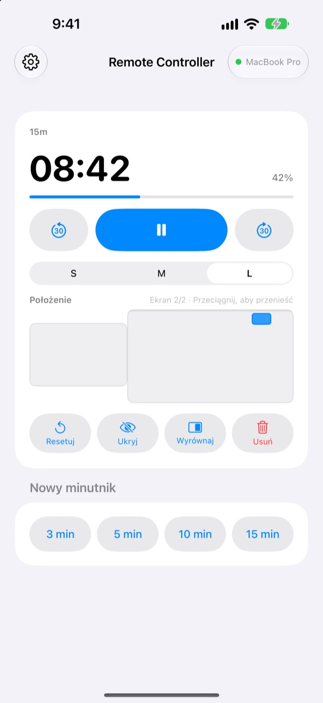
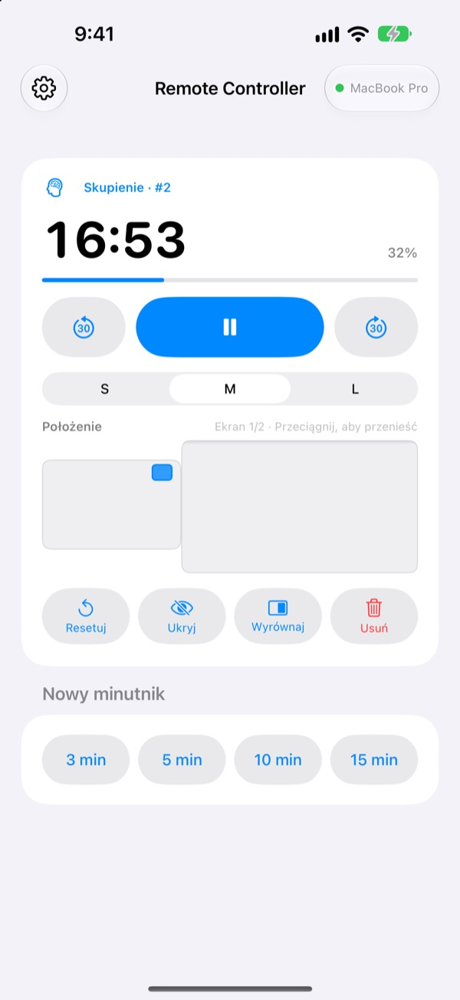
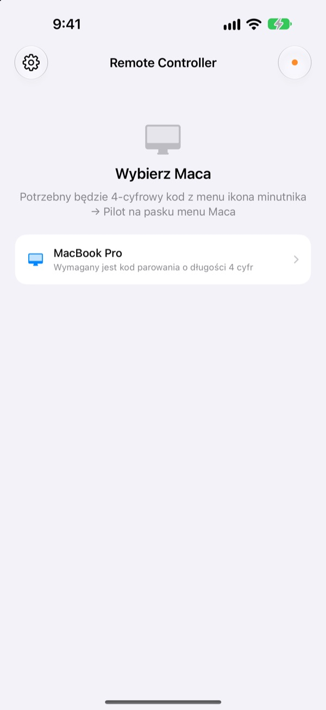

Mac zostaje z tyłu,
minutnik masz w dłoni
Steruj minutnikami StickyPresenter na Macu z iPhone’a. Wyjdź na środek sali, a nadal widzisz pozostały czas, wstrzymujesz, dodajesz 30 sekund albo odsuwasz minutnik z wykresu, który zasłania.
Za darmo · iOS 17 lub nowszy · Wymaga Maca z uruchomionym StickyPresenter w tej samej sieci Wi‑Fi.

Wciąż wracasz do laptopa, żeby ruszyć minutnik?
Wystąpienie się przeciąga i potrzebujesz więcej czasu. Minutnik leży akurat na Twoim najlepszym wykresie. Do tej pory oznaczało to przejście przez scenę i sięganie po gładzik na oczach wszystkich. Z Remote Controller zostajesz na miejscu i raz stukasz w iPhone’a.
Widzisz pozostały czas i od razu go poprawiasz
Pozostały czas i postęp odświeżają się co sekundę. W Pomodoro widzisz też, czy trwa Skupienie, czy Przerwa, i który to cykl.
Przeciągasz? Dodaj 30 sekund. Kończysz wcześniej? Odejmij 30. Nowy minutnik na 3, 5, 10 lub 15 minut startuje jednym stuknięciem, a widżet przełączysz między S, M i L, żeby odczytał go też ostatni rząd.

Kod wpisujesz raz i gotowe
Otwórz aplikację, a na liście pojawi się każdy Mac w Twojej sieci Wi‑Fi z uruchomionym StickyPresenter. Wybierz swojego i wpisz czterocyfrowy kod z menu ikona minutnika ▸ Pilot na pasku menu Maca.
Potem aplikacja sama łączy się z tym Makiem przy każdym otwarciu. Bez konta i bez serwera: oba urządzenia komunikują się bezpośrednio w sieci lokalnej.

Trzy kroki i działa
- 1
Uruchom StickyPresenter na Macu
Gdy na pasku menu widać ikonę minutnika, wszystko gotowe. Aplikacja zostaje tam nawet po zamknięciu wszystkich okien.
- 2
Otwórz aplikację w tej samej sieci Wi‑Fi
Gdy zapyta o dostęp do sieci lokalnej, stuknij Pozwól. Dzięki temu znajdzie Twojego Maca.
- 3
Wybierz Maca i wpisz kod
Wpisz czterocyfrowy kod parowania z menu ikona minutnika ▸ Pilot na pasku menu Maca i minutnik jest w Twoich rękach.
Co zrobisz z iPhone’a
- Pozostały czas
- Pozostały czas, postęp, faza Pomodoro (Skupienie lub Przerwa) i numer cyklu, co sekundę
- Start · Wstrzymaj
- Jeden duży przycisk pośrodku
- −30 s · +30 s
- Przyciski po bokach od razu poprawiają trwający minutnik
- Nowy minutnik
- 3, 5, 10 lub 15 minut
- Rozmiar widżetu
- Widżet w rozmiarze S, M lub L
- Położenie
- Przeciągaj widżet na miniaturze układu ekranów Maca, także na drugi monitor
- Ukryj
- Schowaj widżet na chwilę przed publicznością
- Wyrównaj
- Przywołaj zagubiony widżet obok okna minutnika
- Resetuj · Usuń
- Zacznij minutnik od nowa albo go usuń
- Skróty · Siri
- Powiedz
Uruchom minutnik za pomocą Remote Controller, a na Macu pojawi się minutnik
Pilot obsługuje tylko minutniki działające na Macu. Notatki i teksty do promptera nigdy nie trafiają na iPhone’a, a pilot nie przełącza slajdów.
Pytania
Czy aplikacja na iPhone’a działa sama?
Nie. Remote Controller to pilot do StickyPresenter na Macu, więc StickyPresenter musi działać na Macu w tej samej sieci Wi‑Fi. Aplikację na Maca pobierzesz z linku poniżej albo przez Pobierz aplikację na Maca w Ustawieniach aplikacji.
Mojego Maca nie ma na liście.
Jeśli po 10 sekundach nie pojawi się żaden Mac, aplikacja pokaże listę kontrolną. Sprawdź ją od góry: StickyPresenter działa na Macu (na pasku menu widać ikonę minutnika), oba urządzenia są w tej samej sieci Wi‑Fi (sieć gościnna nie zadziała), Remote Controller jest włączony na iPhonie w Ustawienia ▸ Prywatność i ochrona ▸ Sieć lokalna, StickyPresenter ma zgodę na Macu w Ustawienia systemowe ▸ Prywatność i ochrona ▸ Sieć lokalna, a VPN jest wyłączony.
Aplikacja mówi, że kod parowania jest zły.
Wpisz cztery cyfry widoczne w tej chwili w menu ikona minutnika ▸ Pilot na pasku menu Maca. Jeśli ktoś kliknął na Macu Nowy kod parowania, działa już tylko nowy kod.
Aplikacja mówi, że Mac nie pamięta tego iPhone’a.
Tak się dzieje po użyciu Zapomnij sparowane piloty na Macu albo po ponownej instalacji StickyPresenter. Stuknij Maca na liście i wpisz kod parowania jeszcze raz.
Aplikacja mówi, że Mac nie odpowiada.
Sprawdź, czy Mac nie jest uśpiony, czy oba urządzenia są w tej samej sieci Wi‑Fi i czy VPN jest wyłączony.
Aplikacja mówi, że aplikację na Macu trzeba zaktualizować.
StickyPresenter na Macu jest starszy niż pilot. Zaktualizuj go z Mac App Store, a potem wybierz Maca ponownie.
Czy to bezpieczne w sali pełnej Maców?
Tak. Pilot rozmawia tylko z jednym Makiem, z którym jest sparowany, a pilot, który nie zna Twojego kodu, nie dostanie się do Twojego Maca. Wszystko płynie szyfrowanym, bezpośrednim połączeniem w tej samej sieci. Jeśli kod widział ktoś postronny, kliknij na Macu Nowy kod parowania.
Co trafia do internetu?
Minutniki i polecenia nie opuszczają sieci lokalnej. Do internetu trafiają tylko anonimowe statystyki użycia, raporty awarii i opinie, które zdecydujesz się wysłać. Szczegóły znajdziesz w polityce prywatności.
Czy Siri uruchomi minutnik tuż przed wejściem na scenę?
Tak. Powiedz „Uruchom minutnik za pomocą Remote Controller” albo użyj czynności Uruchom minutnik na Macu w Skrótach. Aplikacja się otworzy i uruchomi minutnik o wybranej długości (od 1 do 600 minut), gdy tylko połączy się z Makiem.
Pytania, błędy albo pomysły? Napisz na mizzking75@gmail.com albo wyślij je prosto z iPhone’a: ikona zębatki w lewym górnym rogu aplikacji ▸ Opinie.